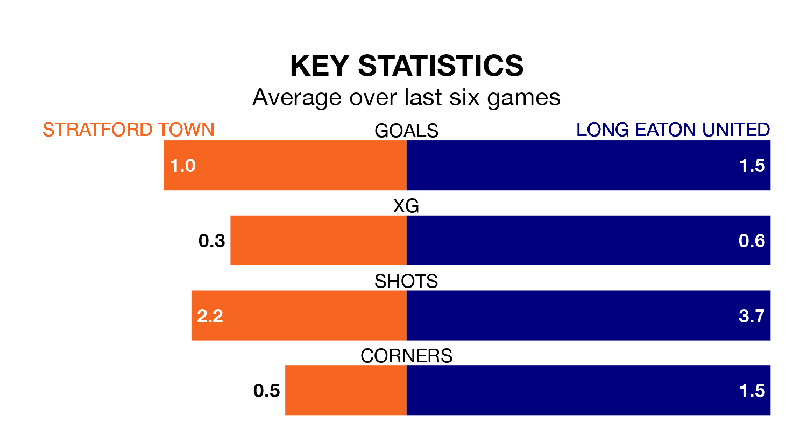

Long Eaton United travel looking to secure a first win in seven Southern League Premier – Central games against Stratford Town on Saturday.
Long Eaton have lost two and drawn four matches since they last earned three points – against Kettering Town on February 3.
They face a Stratford side who have won three and lost three over that time.
Long Eaton are 21st in the table after 34 games, of which they have won four and drawn six, earning 18 points.
Stratford are 16 places ahead of United in fifth, with 18 wins and four draws putting them on 58 points.
With 32 goals in 34 games so far this season, the away side are the league's second-lowest scorers with 0.9 goals per game. And they are conceding more than average, letting in 89 goals at a rate of 2.6 per game.
Town, meanwhile, are above average scorers, with 1.8 goals per game, compared to a league average of 1.5. They have conceded 1.5 goals per game.
Stratford's last match was on March 9, a 1-0 loss against Kettering Town.
Long Eaton drew 0-0 with Needham Market last time out, also on March 9.
Updated: 15:10 (UTC), 15/03/24